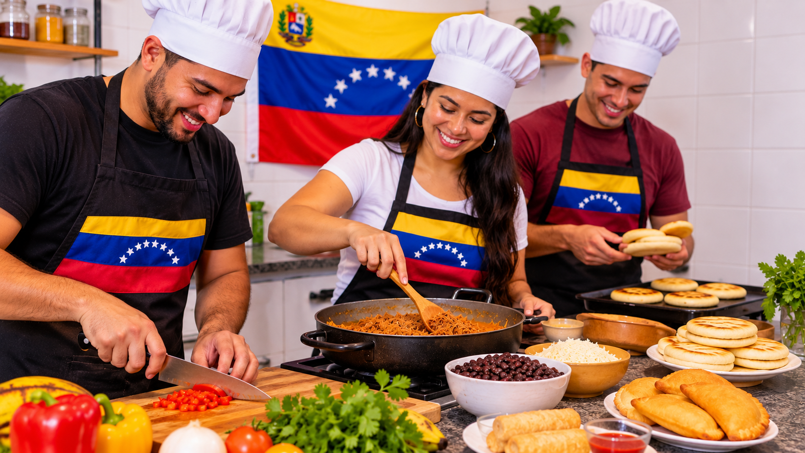
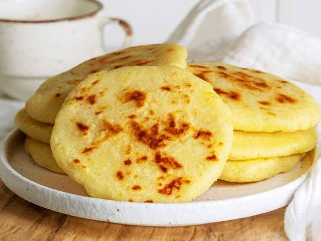
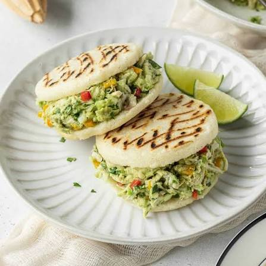
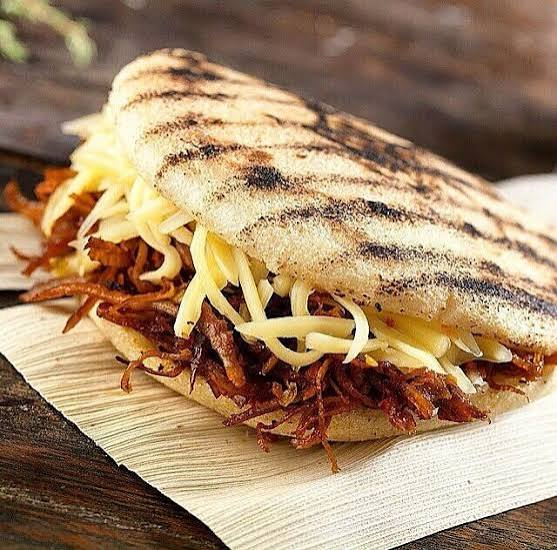
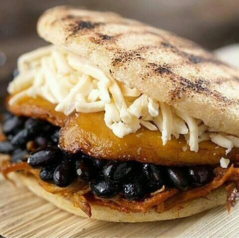
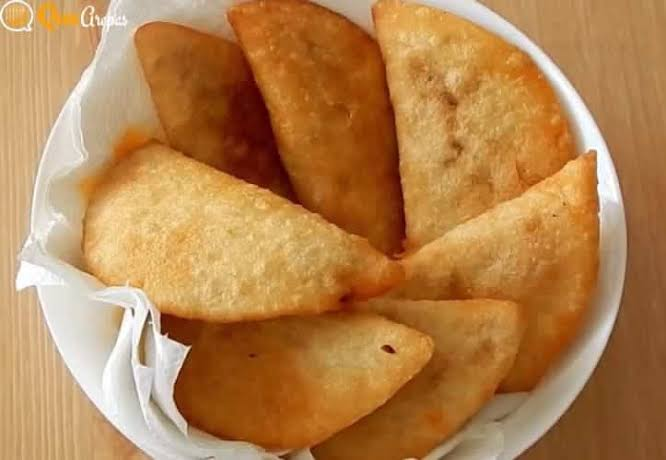
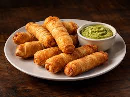
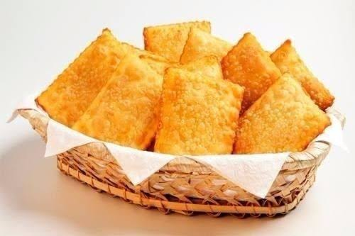

Herança indígena
Milho, mandioca, técnicas da massa e do assado.
Descubra a autêntica culinária venezuelana e explore nossos pratos deliciosos. Uma viagem pelos sabores, histórias e tradições que fazem da cozinha venezuelana uma das mais ricas da América Latina.
A mesa venezuelana nasceu do encontro de três mundos. Cada herança deixou ingredientes, técnicas e rituais que seguem vivos.
Milho, mandioca, técnicas da massa e do assado.
Plátano, coco, frituras e o tempero das costas.
Carnes, queijos, trigo, açúcar e confeitaria.
Essas influências se misturaram ao longo do tempo e ajudaram a formar uma culinária diversa, presente nas receitas e tradições de diferentes regiões da Venezuela.

O prato mais emblemático do país. Clique em um recheio para expandir.


Frango desfiado com abacate, maionese e coentro. Criada em 1955 e batizada em homenagem a uma miss.

Carne desfiada suculenta coberta com bastante queijo amarelo ralado.

Combinação clássica de feijão preto temperado com queijo branco duro ralado.
Parte essencial do dia a dia venezuelano.

Massa de milho frita com recheio de queijo, carne ou frango.

Palitos de massa recheados de queijo, crocantes por fora.

Pastéis fritos, recheados e vendidos em cada esquina.
Essenciais na culinária venezuelana.
Milho pré-cozido, base da arepa.
Banana-da-terra, frita ou assada.
Acompanha o Pabellón e o Dominó.
Queijo fresco e salgado das planícies.
Bebidas que marcam presença na Venezuela.
Doce ou bebida cremosa de coco.
Doce ou bebida cremosa de coco.
Doce ou bebida cremosa de coco.
Principais doces da Venezuela.
Quesilo - Clique para ampliar
Torta Tres Leches - Clique para ampliar.
Golfeado - Clique para ampliar.